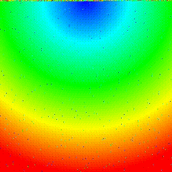

Sorting Visualizer was one of my first personal projects. I made it in order to explore sorting algorithms in an interesting way. I was inspired by videos on Youtube called "The sounds of sorting", wherin bars of various lengths were scrambled and sorted with different algorithms, and each comparison and swap would play a sound. My take on this was to create a program which would create videos of images being scrambled and then sorted with the sorting algorithm or algorithms of the user's choice. I made it to support each of the following sorting algorithms:
The visualizer worked by selecting an image file, and then adding a queue of "actions" which would be applied to the image. These actions could be any of the sorts, a delay, shuffling around each of the pixels in the image, shuffling around each of the pixels in the image without including that action in the video (doing it instantly), or reversing the image
The visualizer worked by selecting an image file, and then adding a queue of "actions" which would be applied to the image. These actions could be any of the sorts, a delay, shuffling around each of the pixels in the image, shuffling around each of the pixels in the image without including that action in the video (doing it instantly), or reversing the image
The following is an example output converted from mp4 into a gif. The actions queued in this case were delay, shuffle, and min heap sort:
As shown above, these sorts are done on the pixel order in the image. This was done by using the header only stb_image library to convert the image into an array of pixels, and then taking that array of rgb pixels and converting it into an array of tuples with it's original place in the image stored as one of the fields. That orignal place was later used as a key in the sorting of these images. The sorting algorithms were implemented in very standard ways, but even so the visualizations were very interesting, as you could see their properties in the videos. In the above example, due to the image being a gradient, the min heap is clearly shown, and it clearly shows the function of the algorithm.
| Message: |
|---|